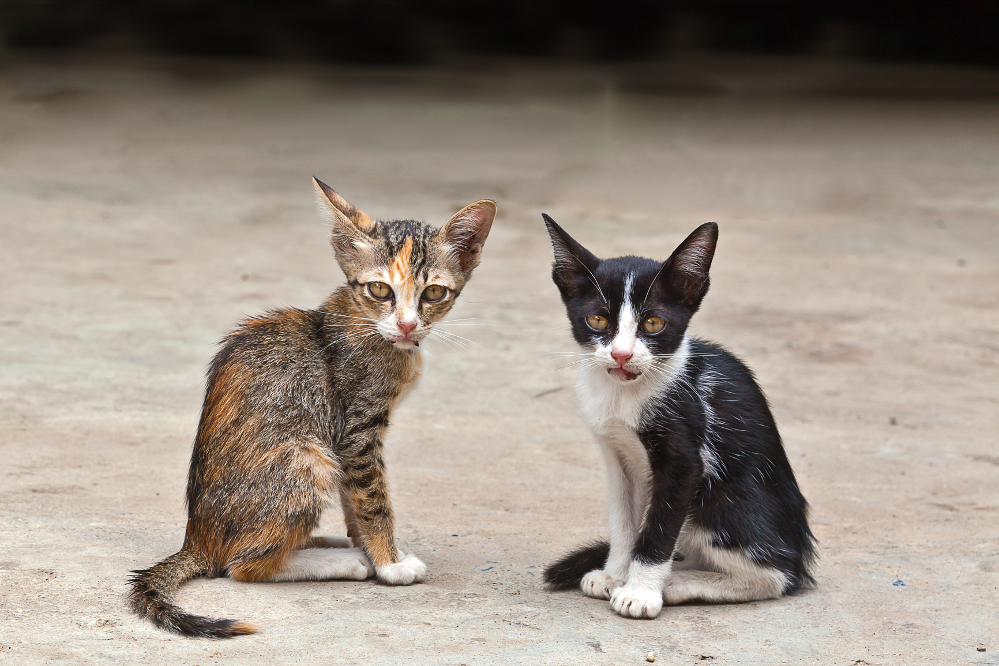
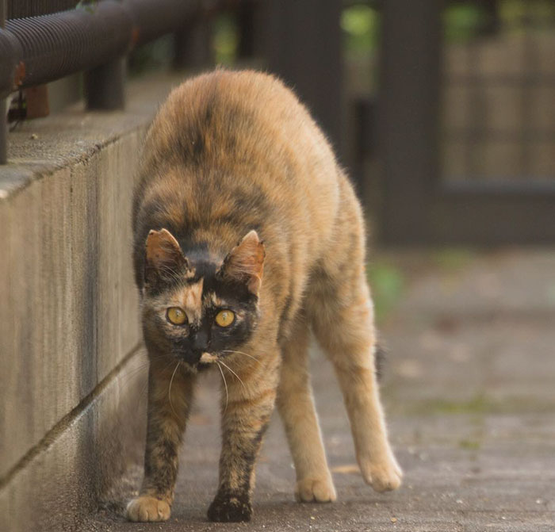
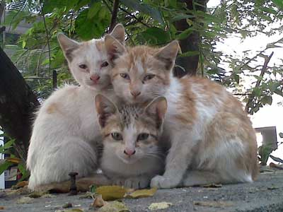
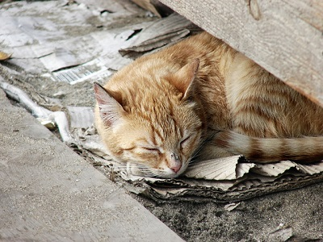
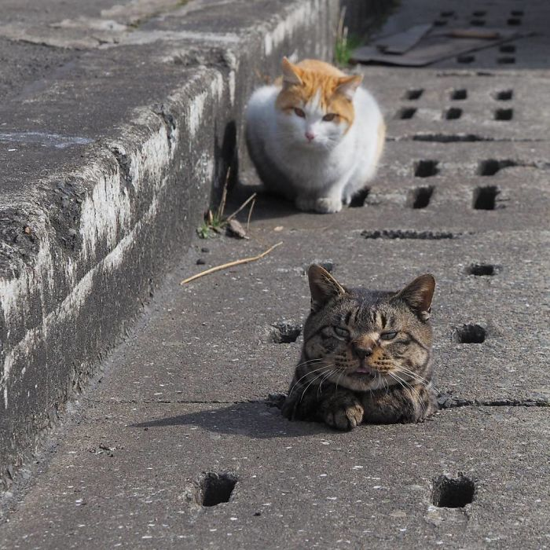
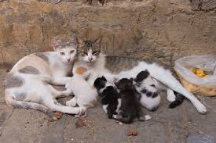
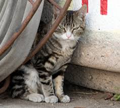

Cat help.org
Who we are: created in 2005, Cat-Help started doing its humaniatrians activities towards cats in the city of philadelphia. The main objectives of the organisation are to get homeless cats out from the streets, give them good care by feeding and cleaning and then donate them to pets lovers.
What we Do: With various donations that we receive along the years, we have spread our branches into 30 differents cities inside the country including 8 from the biggest.in 2015, we hosted the first annual Festival of Cat, where cats lovers gather to celebrate the day of cat and discuss about improvments we can make so cats can live in a more safer world.
Who we are: created in 2005, Cat-Help started doing its humaniatrians activities towards cats in the city of philadelphia. The main objectives of the organisation are to get homeless cats out from the streets, give them good care by feeding and cleaning and then donate them to pets lovers.
What we Do: With various donations that we receive along the years, we have spread our branches into 30 differents cities inside the country including 8 from the biggest.in 2015, we hosted the first annual Festival of Cat, where cats lovers gather to celebrate the day of cat and discuss about improvments we can make so cats can live in a more safer world.
Our Goals:
- Recover as much cats as possible from streets.
- provide housing
- nurture with healthy pets food
- donate to cats lovers with health insurance
Things we've done so far: From 2005 to 2017, we have recovered 353759 cats, founded 30 cats shelters around the country, donated 150000. moreover, we initiated an annual Festival of cat.
To find out more about how you can help us, navigate to the Help Us page for more details.